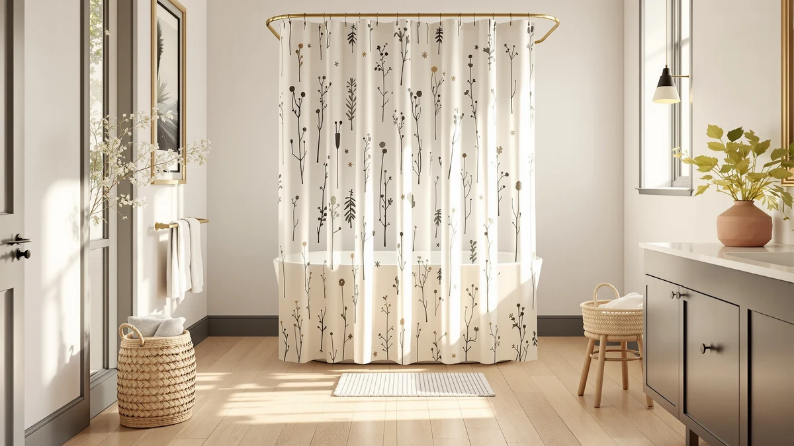

Quick Answer
The best vinyl shower curtains with designs balance a printed or patterned look with a material that shrugs off daily splashing. We compared seven printed and patterned picks on material, price, and verified owner reviews, and the Barossa Design Shower Curtain Liner stands out at $9.89 with 91,634 reviews behind its 4.5-star average.
Our pick: Barossa Design Shower Curtain Liner, $9.89 Check Price on Amazon
Bottom line: our top pick is the Barossa Design Shower Curtain Liner with 6 Magnets - Heavy at $9.89. The best budget option is the N&Y HOME Fabric Shower Curtain Liner Solid White with Magnets at $7.99.
Things to Know Before You Buy
- Most picks share a standard 72 by 72 inch fit. Five of the seven curtains in this guide measure that size. The Mrs Awesome Extra Long Shower runs 72 by 84 inches for a taller stall, and the SKL Home The World Map measures 70 by 72 inches, so check your rod width before ordering either one.
- "Vinyl" in this category usually means a polyester and PEVA blend. Every curtain in this guide lists a polyester and PEVA material rather than pure vinyl sheeting, which is the standard construction for printed shower curtains sold today.
- Review history swings widely across these seven picks. The Barossa Design Shower Curtain Liner carries 91,634 reviews at a 4.5-star average, while the AmazerBath Boho Shower Curtain Modern has 1,079. A larger review base makes a rating easier to trust.
- Printed designs range from bold graphics to solid tones. The SKL Home The World Map prints an actual map across the panel, the AmazerBath Boho Shower Curtain Modern leans into a boho pattern, and the Dynamene Sage Green Shower Curtain sticks to a single solid color for a quieter look.
- Price spans a narrow range for the category. These seven curtains run from $7.99 to $22.99, with most clustering under $18, so a bigger design or brand name does not always mean a bigger price jump.
The best vinyl shower curtains with designs turn a plain stall into the most visually interesting spot in the bathroom without a repaint or a new vanity. A printed or patterned curtain covers more visual surface than almost anything else you can buy for under $25, and it swaps out in minutes if your taste changes next year.
We compared seven printed and patterned shower curtains across material, size, price, rating, and review count, pulling every spec and owner comment from the current Amazon listing rather than promotional copy. The lineup splits between polyester and PEVA blends built for daily water contact, with designs ranging from a printed world map to a boho pattern to a solid sage green tone. Prices run from $7.99 to $22.99, and the two picks with the deepest review history both hold a rating at or above 4.5 stars.
The Barossa Design Shower Curtain Liner leads this group for most bathrooms, pairing a textured PEVA design with a $9.89 price and 91,634 reviews behind its 4.5-star average. If you want a bolder print, an extra-long fit, or a specific color story, we cover those alternatives below along with the honest drawbacks of each.
Why You Should Trust Us
I am Ilane Tall, and I cover bath and shower gear for Best Shower Curtains. For this guide to the best vinyl shower curtains with designs, I focused on the details that decide whether a printed curtain earns its spot in a real bathroom: whether the material handles water without extra help, how the price compares across similar designs, and what verified buyers say once the print has been through a few wash cycles.
We do not own or install every curtain we cover. Instead, we research each listing closely, cross-check material and size claims against the manufacturer's own description, and weigh customer ratings against review volume, since a strong average built on a handful of reviews tells you far less than the same average built on tens of thousands. Every price, material, and rating in this guide comes from the current Amazon listing, and we flag it clearly when a pick does not yet have a deep review history.
How We Picked
We started with a wide list of candidates for the best vinyl shower curtains with designs in printed, patterned, and solid-tone styles, then narrowed the field by material, price spread, and available rating data. We excluded curtains priced well outside the range most shoppers expect to pay for this category and prioritized listings with a public review count over ones without.
We also wanted a real spread of designs rather than seven near-identical panels. That is why this guide includes a textured PEVA liner, a boho print, a solid sage tone, a printed world map, and a couple of straightforward fabric options that differ mainly in size and price. We weighed each listing's material claim against its price, since a curtain marketed at a premium is worth a closer look before it earns a spot here.
How We Compared
We compared each of the best vinyl shower curtains with designs in this guide on the same set of facts: listed material, panel size, current price, and star rating and review count where a listing has them, all pulled directly from the live Amazon listing rather than marketing copy. Where a listing described a design as boho or a solid color like sage green, we checked that description against the product name and images rather than taking the marketing copy at face value.
We also weighed review count against rating, because a strong average built on tens of thousands of verified buyers, like the Barossa Design Shower Curtain Liner's 91,634 reviews, carries more weight than a similar average with a few thousand behind it. Reviewers consistently note whether a print holds up after washing, whether the material needs a separate liner, and how the panel hangs once it is out of the packaging, and we folded that owner feedback into the pros and cons below alongside the raw specs.
Our Picks

Barossa Design Shower Curtain Liner
What we like
- 91,634 reviews back its 4.5-star average, the deepest review history in this guide
- Textured PEVA construction resists splashing without a separate liner
- At $9.89, it is one of the least expensive picks here
Flaws but not dealbreakers
- Design leans toward texture rather than a bold printed graphic
- Standard 72 by 72 inch size will not fit an oversized stall
| Material | Polyester / PEVA |
| Size | 72x72 |
The Barossa Design Shower Curtain Liner leads this guide on the strength of its review history alone. With 91,634 reviews behind a 4.5-star average, it has more verified owner feedback than the rest of this lineup combined, which makes its rating easier to trust than a newer listing with a handful of reviews.
At $9.89, it also undercuts every other pick here on price, and the polyester and PEVA blend is built to handle daily splashing in a stall shower. The tradeoff is a subtler, texture-driven design rather than a loud printed graphic, so it suits a bathroom where you want a dependable panel more than a statement piece.

Amazon Basics Bathroom Shower Curtain
What we like
- 45,448 reviews support a 4.6-star average, among the strongest in this guide
- Amazon Basics brand recognition adds a layer of buying confidence
- At $8.99, it is the second-cheapest pick in this lineup
Flaws but not dealbreakers
- Design skews toward a straightforward look rather than a bold pattern
- Standard 72 by 72 inch size fits most but not oversized stalls
| Material | Polyester / PEVA |
| Size | 72x72 |
The Amazon Basics Bathroom Shower Curtain earns its spot through sheer consistency. Its 4.6-star average across 45,448 reviews puts it near the top of this guide for review volume, and the Amazon Basics name carries brand recognition that some of the smaller labels here do not have.
At $8.99, it costs almost the same as the Barossa liner, and the polyester and PEVA blend follows the same splash-resistant formula that runs through most of this lineup. Owners looking for a specific bold print should look elsewhere in this guide, since this pick favors a simpler look over a statement design.

AmazerBath Boho Shower Curtain Modern
What we like
- Boho pattern stands out from the plainer designs elsewhere in this guide
- 4.6-star average matches the top ratings in this lineup
- Polyester and PEVA blend handles daily splashing like the rest of the field
Flaws but not dealbreakers
- 1,079 reviews is the smallest review base of any pick here
- At $17.99, it costs roughly double the cheapest picks in this guide
| Material | Polyester / PEVA |
| Size | 72x72 |
The AmazerBath Boho Shower Curtain Modern is the pick to reach for if a plain or solid panel feels too safe. Its boho print gives it more visual personality than the Amazon Basics or Barossa options, and its 4.6-star average matches the highest ratings in this comparison.
The catch is review depth. At 1,079 reviews, it has the smallest sample size in this guide, so that average carries less statistical weight than the Barossa liner's 91,634 or the N&Y HOME curtain's 68,277. At $17.99, it also sits closer to the top of the price range here, so it makes the most sense for a shopper who values the design over squeezing out the lowest possible price.

Dynamene Sage Green Shower Curtain
What we like
- 22,421 reviews back a 4.6-star average, a solid middle-of-the-pack review base
- Sage green tone pairs easily with neutral tile and fixtures
- Polyester and PEVA blend matches the splash resistance of the rest of the lineup
Flaws but not dealbreakers
- Solid color reads as far less of a design than the boho or world map picks
- At $15.99, it costs nearly double the cheapest option here
| Material | Polyester / PEVA |
| Size | 72x72 |
The Dynamene Sage Green Shower Curtain takes the opposite approach from the boho and world map picks in this guide. Instead of a printed graphic, it leans on a single sage green tone that reads as calmer and more spa-like against white or neutral tile.
Its 22,421 reviews and 4.6-star average put it comfortably in the middle of this lineup for both popularity and price, at $15.99. Shoppers who came to this guide specifically for a printed design may find the solid tone too plain, but it is a strong option if your bathroom already has enough visual noise.

N&Y HOME Fabric Shower Curtain
What we like
- 68,277 reviews back a 4.6-star average, the second-deepest review history in this guide
- At $7.99, it ties for the lowest price in this lineup
- Polyester and PEVA blend resists splashing without a separate liner
Flaws but not dealbreakers
- Fabric design leans simple rather than boldly patterned
- Standard 72 by 72 inch size will not stretch to cover an oversized stall
| Material | Polyester / PEVA |
| Size | 72x72 |
The N&Y HOME Fabric Shower Curtain pairs the lowest price in this guide with one of its deepest review histories. At $7.99, it ties the Mrs Awesome pick for the cheapest option here, and its 68,277 reviews at a 4.6-star average trail only the Barossa liner for review volume.
That combination makes it an easy budget recommendation, even though its design sits closer to the plain end of this lineup than the boho or world map picks. The polyester and PEVA blend follows the same splash-resistant construction as the rest of the field, so the tradeoff here is visual boldness, not durability or price.

Mrs Awesome Extra Long Shower
What we like
- 72 by 84 inch size covers taller stalls that the other six picks in this guide cannot
- 29,377 reviews back a 4.5-star average
- At $7.99, it matches the lowest price in this lineup
Flaws but not dealbreakers
- Extra length is wasted in a standard-height stall or tub
- Design skews plain compared with the boho or world map picks
| Material | Polyester / PEVA |
| Size | 72x84 |
The Mrs Awesome Extra Long Shower is the only pick in this guide sized for a taller stall. At 72 by 84 inches, it covers a foot more height than the standard 72 by 72 inch curtains that make up the rest of this lineup, which matters if your rod sits higher than average or your shower has a taller enclosure.
At $7.99, it also matches the lowest price here, and its 29,377 reviews back a 4.5-star average that holds up against the rest of the field. The extra length is wasted on a standard-height stall, so this pick earns its spot specifically for bathrooms that need the added coverage.

SKL Home The World Map
What we like
- World map print is the most distinctive design of any pick in this guide
- 4.6-star average matches the top ratings in this lineup
- Polyester and PEVA blend delivers the same splash resistance as the rest of the field
Flaws but not dealbreakers
- At $22.99, it is the most expensive pick in this guide
- 2,909 reviews is a thinner sample than the top volume picks here
- 70 by 72 inch size runs an inch narrower than the standard 72 by 72 inch fit
| Material | Polyester / PEVA |
| Size | 70x72 |
The SKL Home The World Map is the pick for a shopper who came to this guide specifically for a bold, conversation-starting design. Its printed world map graphic stands apart from every other curtain in this lineup, most of which stick to solid tones or subtler patterns.
That distinct look comes at a cost. At $22.99, it is the most expensive pick here, and its 2,909 reviews trail well behind the volume backing the Barossa, N&Y HOME, and Amazon Basics picks. The 70 by 72 inch size also runs slightly narrower than the standard 72 by 72 inch fit used elsewhere in this guide, so measure your rod before ordering.
Quick Comparison
| Product | Material | Price | Rating | Best for | Get it |
|---|---|---|---|---|---|
| Barossa Design Shower Curtain Liner | Polyester / PEVA | $9.89 | 4.5 | Proven track record on a budget | View on Amazon → |
| Amazon Basics Bathroom Shower Curtain | Polyester / PEVA | $8.99 | 4.6 | Trusted brand at a low price | View on Amazon → |
| AmazerBath Boho Shower Curtain Modern | Polyester / PEVA | $17.99 | 4.6 | Boldest boho print | View on Amazon → |
| Dynamene Sage Green Shower Curtain | Polyester / PEVA | $15.99 | 4.6 | Calming solid color | View on Amazon → |
| N&Y HOME Fabric Shower Curtain | Polyester / PEVA | $7.99 | 4.6 | Best value with deep reviews | View on Amazon → |
| Mrs Awesome Extra Long Shower | Polyester / PEVA | $7.99 | 4.5 | Taller stalls and walk-ins | View on Amazon → |
| SKL Home The World Map | Polyester / PEVA | $22.99 | 4.6 | Boldest printed design | View on Amazon → |
The Competition
A couple of these picks land lower in this guide for specific, addressable reasons rather than a broad flaw. The SKL Home The World Map carries the boldest print in the lineup, but at $22.99 it costs more than any other pick here, and its 2,909 reviews trail well behind the volume backing the cheaper options. The AmazerBath Boho Shower Curtain Modern earns a strong 4.6-star average, but its 1,079 reviews give it the thinnest track record in this comparison.
We also passed over generic solid-color liners with no reported material beyond a bare vinyl listing and no public rating, since a curtain with no review history is a harder recommendation than one backed by thousands of verified buyers. We excluded any listing priced well outside this category's typical $8 to $23 range without a matching jump in size or review count. After weighing design, material, price, and review depth across all seven, the best vinyl shower curtains with designs for most bathrooms still center on the Barossa Design Shower Curtain Liner, with the N&Y HOME Fabric Shower Curtain as the strongest budget alternative.
Frequently Asked Questions
Do vinyl and PEVA shower curtains need a liner?
It depends on the setup. All seven picks in this guide use a polyester and PEVA blend built to resist splashing on their own, so many owners hang them alone in a stall shower. A tub with heavier splash still benefits from a separate liner behind any of these curtains, printed or solid.
What size shower curtain do most printed and patterned styles come in?
Five of the seven curtains in this guide measure 72 by 72 inches, the standard size for a single-width rod over a tub or stall. The Mrs Awesome Extra Long Shower measures 72 by 84 inches for taller stalls, and the SKL Home The World Map measures 70 by 72 inches, so check your rod width before ordering either one.
How do you keep a printed vinyl shower curtain from fading?
Wipe it down after each use and let it air out fully between showers, since trapped moisture breaks down a printed design faster than normal water contact. Owners of the higher-review picks in this guide, like the Barossa Design Shower Curtain Liner and N&Y HOME Fabric Shower Curtain, report that the print and color hold up well when the curtain gets a chance to dry between uses.